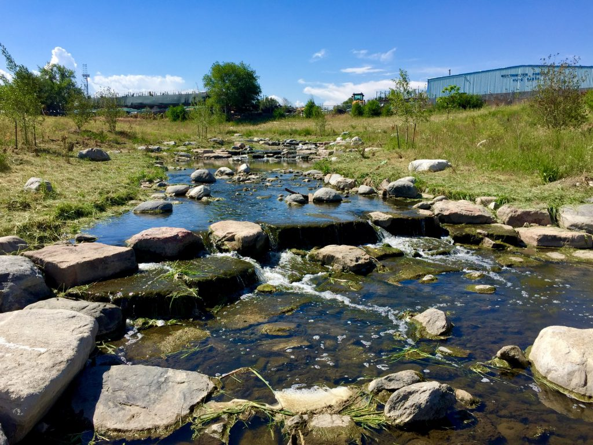
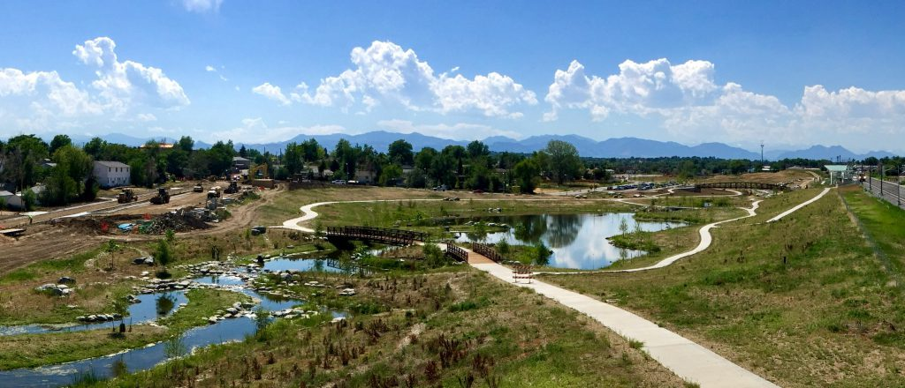
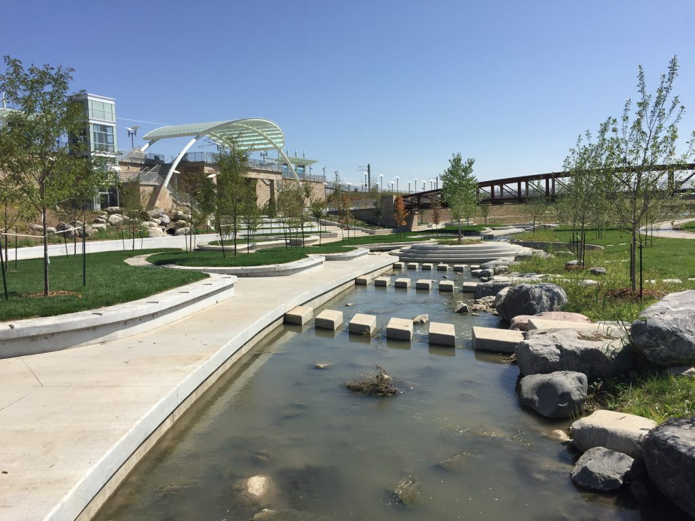

Creating and Preserving Open Space
Urban stream corridors serve many critical roles within a community. While their primary function is floodwater conveyance during storm events, a majority of the time they serve as areas of open space and recreational amenities. Their linear nature is well-suited for trail systems and a variety of recreational activities. People are naturally drawn to water and the natural environment, and Coloradoans in particular who seek an active outdoor lifestyle value natural areas for their beauty and the opportunity to connect with wildlife. Urban stream corridors provide an immense ecological resource and are central to the natural processes that support the environment. The elements of a stream corridor – the active channel, a connected floodplain, the riparian corridor, wetland areas, wildlife habitat areas – create assets that are beneficial to the plant and animal population as well as the surrounding community.
For many years, the District has advocated for floodplain preservation. We believe there are many benefits to preserving natural floodplain functions and that channelizing and armoring streams misses out on the opportunity of gaining other important stream functions and contributes to the decline of stream health. We believe when developing adjacent to stream corridors, the first choice should be multi-use preservation and restoration projects that enhance stream corridor function.
Our aim is to help local governments guide smart development in their communities that recognizes the value of preserving the floodplain, wetland, and riparian areas in an ever urbanizing environment. This offers the opportunity to establish the character of the new development and provide amenities that are components of livable communities with healthy economies. We encourage the following approach to stream management associated with smart development:
- Preserve the floodplain and riparian systems to the greatest extent possible.
- Restore degraded and damaged stream systems.
- Mitigate the effects of watershed urbanization with functional steam stability techniques.
Why is stream corridor preservation and open space important?
Flood damages are the most costly natural disasters that we face as a nation. According to Gilbert F. White, the father of modern floodplain management, we know that “Floods are an act of God, but flood losses are largely an act of man” (Human Adjustment to Floods, 1945). Dr. White argued that over-reliance on structural flood protection measures (dams and levees for example) has increased the potential for flood damage. Where feasible, adaptation to the flood hazard is a sounder public policy. Preserving a proper stream corridor has the potential to increase property values while enhancing the natural and beneficial functions of floodplains.
Stream corridors and adjacent riparian zones are relatively small geographic areas; however their environmental importance is immense. “Riparian areas comprise less than one percent of the land area in most western States, yet up to 80 percent of all wildlife species in this region of the country are dependent upon riparian areas for at least part of their life cycles.” (Congressional Testimony of Robert Wayland, EPA, June 26, 1997). Riparian areas are often called “ribbons of green”, reflecting the contrast with the otherwise dry landscape of the arid west. Agricultural and land development activities have resulted in loss or significant degradation of 75 to 95 percent of this invaluable habitat. Development projects have the opportunity to preserve, protect, and utilize stream corridors and their adjacent riparian areas. In fact, increased urban runoff often results in sustained base flows in streams that were ephemeral in the pre-development condition.
What are the natural and beneficial functions of floodplains?
The low banks adjacent to streams are infrequently occupied by floodwaters. During a flood event, these overbank areas serve an important function in moderating peak discharges and velocities, and filtering out sediment and debris. The natural and beneficial functions of floodplains can be summarized as follows:
- Floodplains have the capacity to store and convey floodwaters, thus diminishing floodwater velocities and reducing flood damages and erosion.
- Soil fertility is increased as floodplains naturally replenish the nutrients of the surrounding soils during periodic inundation.
- Floodplains improve water quality and quantity by providing areas of groundwater recharge, while also filtering impurities and nutrients.
- Floodplains enhance biodiversity, providing breeding and feeding grounds for fish and a wide variety of wildlife including endangered species.
How does UDFCD promote stream corridor preservation?
The District’s boundaries encompass approximately 1600 square miles of the Denver Metropolitan area. In addition to watershed planning, floodplain management and capital improvement activities, the District works with each of our 39 local government partners to guide stream improvements associated with private land development projects. Ongoing maintenance of stream corridors is essential to long-term stream vitality, so the District offers maintenance assistance to the local governments for streams within private land developments through our Maintenance Eligibility Program. Launched in 1981, the Maintenance Eligibility Program has always encouraged floodplain preservation and restoration of degraded streams through thoughtful land development.
A resource-driven approach to land development activities results in a positive nexus in regulatory programs, floodplain management, community building, and sound business principles. Stewardship of our natural resources is a basic decision that we make as a society. “Civilizations rise and fall as they manage natural resources” (Collapse: How Societies Choose to Fail or Succeed, Jared Diamond, 2006).